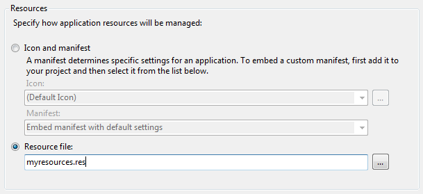
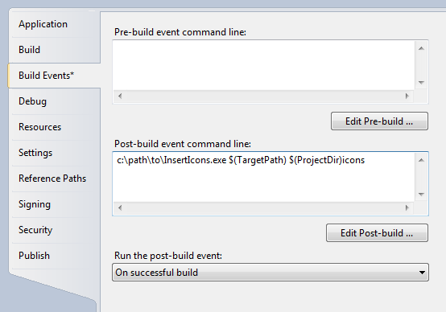

Add multiple icons to a .NET application
Posted: Last updated:Recently at work I needed to add multiple icons to our .NET application because I wanted these icons to be available to Windows to use as shortcut icons for the app. Windows icons are embedded into executables and dlls as win32 resources, which are completely different to .NET resources (.resx), and cannot be easily added to a .NET assembly. By default the C# compiler (and Visual Studio) only let you select a single application icon. The only "supported" way to get multiple icons into a .NET assembly is to go to the Project Properties, and on the Application tab you can select that you want to include a Win32 .res file instead of an icon and manifest.

This is bad in a few ways:
- .res files are compiled from .rc files. So first you need to compile an .rc file manually into a .res file.
- Editing .rc files caused all kinds of problems in my Visual Studio. These are meant to be used in C++ projects, not .NET projects.
- By selecting a .res file you've basically said that you are going to handle all win32 resources yourself. That means that you have to include a manifest resource and a Version resource in your .res file. The standard AssemblyVersion, AssemblyProductVersion attributes have no effect if you've selected that you'll add win32 resources yourself.
I could have done this, but I had no interest in learning the details of how a Version resource is laid out in a .rc file, learning the .rc file format and losing all the nice features I get from a standard C# project. So, I figured I could probably hack something together to make this easier.
I found a great MIT licensed library for working with resources, ResourceLib, available at https://github.com/dblock/resourcelib. I used that to create a little console program that can add icons to an assembly after it's built. The program takes in the name of the assembly and a list of icons that should be added to the assembly. The icons can be specified in four different ways:
- List of .ico files seperated with ;
InsertIcons.exe myprogram.exe icon1.ico;icon2.ico;icon3.ico
- Filename of a textfile that contains the names of the .ico files, one on each line.
InsertIcons.exe myprogram.exe myiconlist.txt
- A folder name, all .ico files in the folder will be added in alphabetical order.
InsertIcons.exe myprogram.exe c:\path\to\my\iconfolder
- If no icons are specified on the command line they are read from stdin.
dir /b *.ico | InsertIcons.exe myprogram.exe
The icons get ids starting from 40000. The reason for this is that if you specify an application icon in the project properties, it will get the id 32512, which is some kind of special ID for the main app icon. We want that icon to be the first icon in the file so it will be the default icon in Windows, so we start our id range on 40000. You can of course also decide to not specify the application icon in the project properties, in which case the first icon you pass to InsertIcons.exe will be the default icon for the application.
If you need this app you probably want to make it run automatically every time you build your project. The easiest way to do that is to add a post build event in Visual Studio. Go to Project Properties->Build Events and there you can add a Post-Build event. The Post-Build event can use MSBuild variables which is nice. Lets say you have a folder named "icons" under your project folder that has all the icons you want to add. Then you could add the following line to your Post-Build Event:
C:\path\to\InsertIcons.exe "$(TargetPath)" "$(ProjectDir)icons"

That doesn't let you control the order of the icons in the file, but you could of course just name them in a way so they are sorted alphabetically the way you want, e.g. "01 - first.ico", "02 - second.ico".
If you want more precise control of which icons are included and their order, add a text file to your project, name it something like icons.txt. Add the paths to the icons to the file, one on each line. If you use relative paths they will be resolved relative to the iconlist file, not the project location! E.g. if your iconlist file is at c:\project\foo\bar\iconlist.txt and you have a line "..\myicon.ico" then that will resolve to c:\project\foo\myicon.ico.
To add the icons from your icon list file to the application, add the following to the Post-Build event (assuming your iconlist file is in the root of the project folder):
C:\path\to\InsertIcons.exe $(TargetPath) $(ProjectDir)iconlist.txt
UPDATE 7.5.2012: I've updated the program so it now accepts a third parameter that is the name of a strong name key file. If you are adding icons to strong named assemblies you can now add this third parameter and the assembly will be re-signed after adding the assemblies, since modifying the assembly ruins the original signature.
And that's about it. The source is MIT licensed and available on GitHub or you can just download the program directly. If you find this program useful please let me know in the comments :)